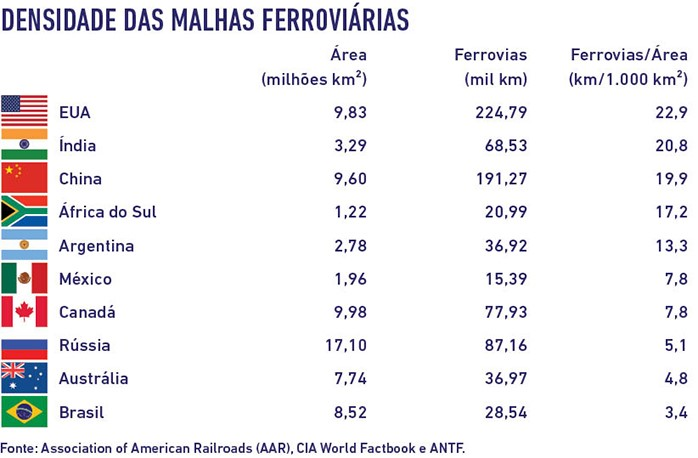
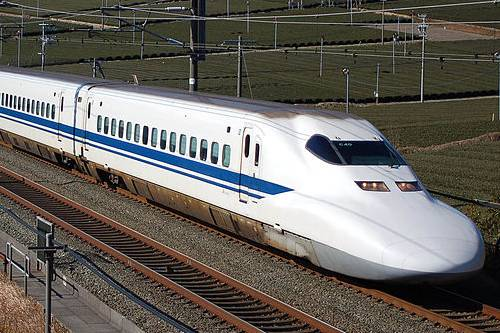

RANKING DE MALHA FERROVIÁRIA
Os 5 países que possuem mais malha ferroviária no mundo são:
- EUA (293.564 km)
- China (124.000 km)
- Rússia (87.157 km)
- Canadá (77.932 km)
- Índia (68.525 km)
O Brasil, com apenas 30 129 quilômetros ocupa a 9º colocação.
Os 5 países que possuem mais malha ferroviária no mundo são:
O Brasil, com apenas 30 129 quilômetros ocupa a 9º colocação.
As vias férreas nos Estados Unidos conseguiram florescer pela possibilidade de exportação com os dois oceanos: Atlântico e Pacífico. À vista disso, o transporte ferroviário se tornou essencial para transportar de maneira rápida tanto para os portos leste, quanto oeste. Outro exemplo acontece na França, onde o país consegue exportar para 3 continentes, com a utilização das ferrovias, que carregam os produtos aos portos de forma veloz aos portos do Mediterrâneo.
O Brasil poderia utilizar dessa logística para ter maior poder no mercado exterior, escoando os produtos dos locais mais afastados do litoral para os portos. Porém, a priorização do transporte rodoviário torna o processo muito mais lento.
Percebe-se que os EUA, referência no mercado internacional, possuí uma vasta malha ferroviária distribuída em seu território. O Brasil, por sua vez, sofre da carência destas, sobrecarregando o transporte rodoviário.
Isto posto, pode-se concluir que o Brasil, um país de território continental, é capaz de obter grandes resultados com a utilização da geografia a seu favor. Seria muito mais eficiente e acessível se fossem utilizadas as ferrovias para transportar as cargas da parte interna do país, e mais afastadas do litoral, para os portos. Dessa forma, alcançaria um poder de comercialização internacional maior, conseguindo competir em exportação. Não só para a navegação, as ferrovias conseguiriam transportar para países vizinhos da América Latina.
Em um estudo por Fogel, em 1964, afirma que na ausência da infraestrutura ferroviária, o PIB dos Estados Unidos teria um valor de 10 a 20% inferior ao apresentado no final da década de 60. Outro estudo em 1997 por Morisigui Hayashiyama, informa que a implantação ferroviária contribuiu para o crescimento do PIB Japonês no período de 1870 a 1940.
O Japão é referência em tecnologia de trens, o que contribui para o próspero desenvolvimento do país. Como visto, as ferrovias foram uma forma de evoluir sua economia.
